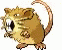
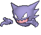
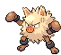
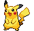
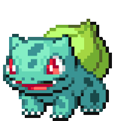
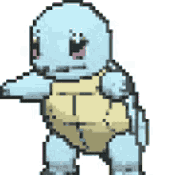
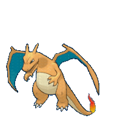
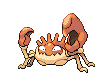
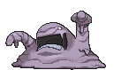

{kind=link}

Ash Ketchum nasceu em Kanto na cidade de Pallet, quando completou 10 anos, foi ao laboratório do Professor Carvalho buscar seu primeiro Pokémon, ele de início escolhe um Squirtle, porém este já fora levado por Gary Carvalho, depois tenta escolher Bulbasaur e Charmander, porém também tinham sido levados, lhe restando apenas um Pikachu.
Ele tem como objetivo se tornar o maior mestre Pokémon do mundo, viajando por diversas regiões e competindo em várias ligas regionais, Ash já viajou em 7 regiões, e participou de 8 ligas pokemon.
Ash tem a pele morena, tem abaixo dos olhos um "raio", que é uma marca de nascença. Seus cabelos são negros e espetados para os lados e tem o olho castanho escuro.
Atualmente ele usa uma camisa azul com listras horizontais brancas, uma bermuda saruel cinza com detalhes vermelhos, um tênis azul com detalhes brancos e um boné vermelho de aba reta branca e azul na extremidade.
Enquanto viaja pelos continentes, Ash vai capturando alguns pokémons que encontra e montando uma equipe que ele carrega enquanto está viajando.
Ash continua viajando por vários lugares, sua equipe vai mudando, conforme vai capturando novos pokémons. Confira aqui as principais equipes que Ash montou durante sua jornada.
Equipe no início da jornada em Kanto
Os primeiros pokémon que ele capturou foram:
O 7º pokémon que Ash capturou foi um Krabby. Com já tinha 6 pokémons na equipe, este foi transferido automaticamente para o laboratório do profº Carvalho.
– Ash chegou a capturar também um Muk que vivia nos esgotos de uma cidade. Porém ele exalava um odor desagradável que era possível sentir mesmo com ele dentro da pokébola. Por essa razão, Muk foi enviado ao professor.
Em futuras aparições Muk aparecia sempre subindo nas costas de alguém, e o mal cheiro que antes possuía parece ter desaparecido.
– Muitos descobriram que Ash havia capturado uma manada de Tauros alguns episódios depois, quando o pokémon foi visto com o profº Carvalho. Isso se deve ao fato de Tauros ter sido capturado em um episódio banido no ocidente. Enquanto Ash visitava a Zona Safári, ele havia recebido 30 Pokébolas Safári para capturar pokémons do local, porém, sempre que tentava, apareciam Tauros pela frente, fazendo com que ele gastasse todas as Pokébolas Safári em Tauros. Os 30 Tauros foram enviados ao profº Carvalho.
– Um Mr. Mime acabou desenvolvendo um bom relacionamento com a mãe do Ash. Como Ash precisava de um Mr. Mime para resolver um problema em um circo, a mãe do Ash pede para que esse Mr. Mime o ajude. Ash captura esse Mr. Mime, mas como ele tem muito afeto por sua mãe, Ash resolve deixar o Mr. Mime com sua mãe.
Enquanto Ash navegava pelo navio St. Anne, um homem convenceu Ash a fazer uma troca. Ash trocou seu Butterfree com o Raticate do homem. Um pouco depois se arrependeu e desfez a troca.
– Com o desejo de ter uma chance contra Sabrina, a líder de um ginásio psíquico, Ash foi até uma torre de fantasmas para capturar Gastly, Haunter ou Gengar.
Haunter resolveu seguir Ash e o pokémon fez a líder sombria rir como jamais havia rido antes. Haunter então decidiu ficar com Sabrina.
– Um Mankey havia roubado o boné de Ash, após ele evoluir, Ash o capturou.
Primeape não obedecia muito Ash até participar de um torneio de lutadores, onde venceu. Anthony, um treinador de lutadores, resolveu treinar Primeape para que ele fosse um grande lutador, logo, Ash deixou Primeape com Anthony.
| Raticate | Haunter | Primeape |
|---|---|---|
|  |  |  |
Equipe no fim de sua jornada em Kanto
Após Ash ter libertado Butterfree, o time de Ash resumiu-se principalmente em Pikachu, Pidgeotto e os três iniciais.
– Charmander, após ter usado muito de seu poder de fogo, acabou evoluindo em Charmeleon. Porém, após isso ele perdeu o respeito por Ash, desobedecendo suas ordens.
A fim de batalhar com Aerodactyl, Chameleon evoluiu para Charizard, podendo voar atrás dele. Desde então Charizard sempre recusou a aceitar as ordens de Ash, a única exceção foi quando batalhou com o Magmar de Blaine, mas desta vez só aceitou obedecer Ash para testar suas forças com Magmar, pokémon o qual considerava poderoso.
– Após a liga pokémon, Ash encontra o Spearow que havia tentado capturar no início de sua jornada, porém agora já evoluído em Fearow. Esse Fearow liderava um bando de Spearow que atacavam um bando de Pidgey e Pigeotto. O Pidgeotto de Ash tentou defender este bando de Pidgey e Pidgeotto, eis que ele evolui em Pidgeot e derrota Fearow e seu bando de Spearow. Ash resolve deixar seu Pidgeot para liderar aquele bando de Pidgey e Pidgeotto, ajudando-os a se defender.
| Pikachu | Bulbassauro | Squirtle | Charizard | Pidgeotto |
|---|---|---|---|---|
|  |  |  |  | |
– Ash resolveu batalhar na liga com o Krabby que capturou no início de sua jornada. Ele evoluiu para Kingler durante sua batalha na liga. Muk, que também havia sido deixado com o profº Carvalho, também foi utilizado na liga. Já Tauros, sequer foi lembrado.
– Pidgeotto não chegou a participar de nenhuma batalha durante a liga. Pikachu, Bulbasaur e Squirtle tiveram seus momentos.
– Charizard também chegou a ser colocado em campo, mas não obedecia Ash. Ash não tinha outra escolha, Pidgeotto estava exausto antes mesmo de começar a batalha, Pikachu e Squirtle já haviam sido derrotados, enquanto Bulbasaur teria desvantagem, caso fosse utilizado. Foi graças a Charizard que Ash perdeu sua primeira liga pokémon.
| Pikachu | Kingler | Muk | Squirtle | Bulbassauro | Charizard |
|---|---|---|---|---|---|
|  |  |